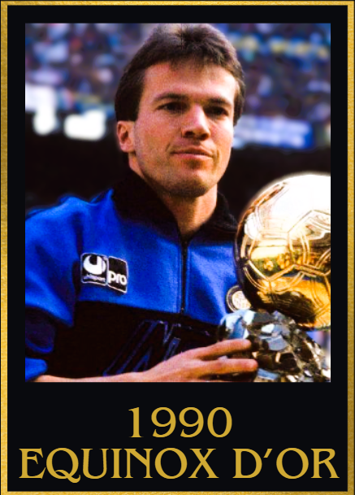
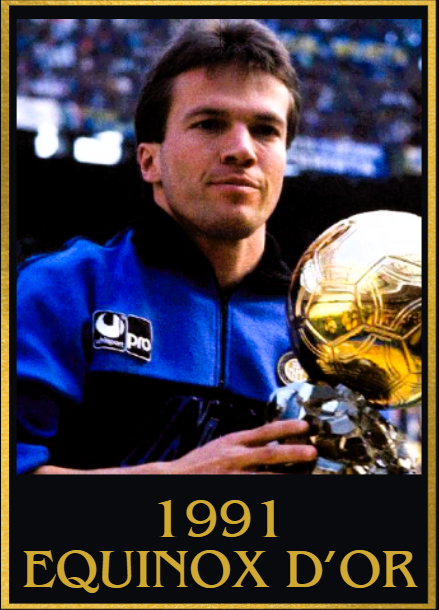
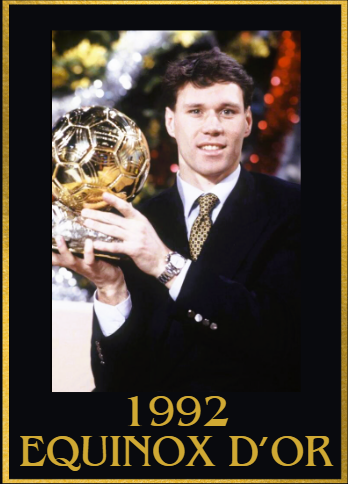
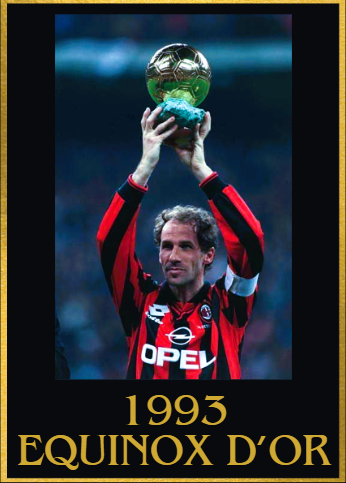
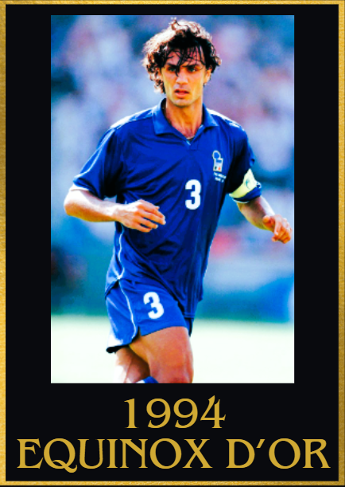
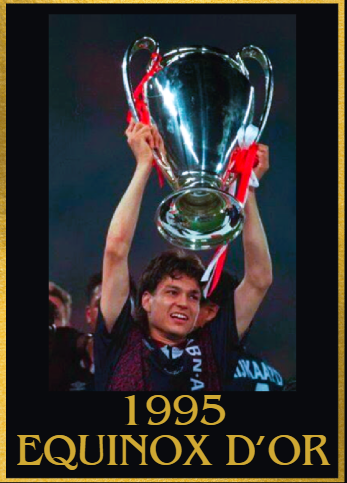
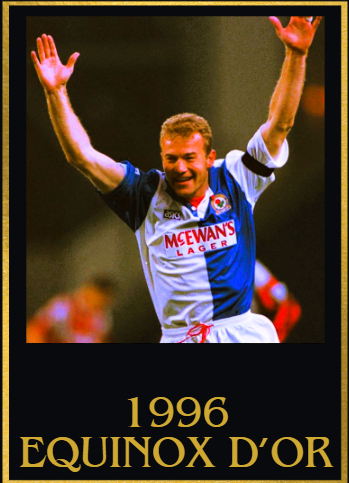
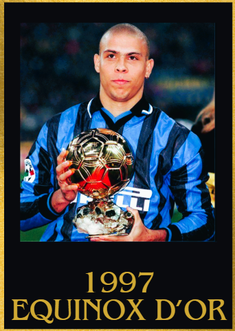
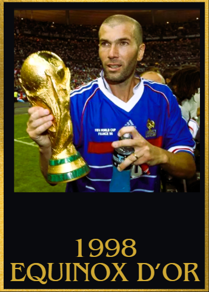
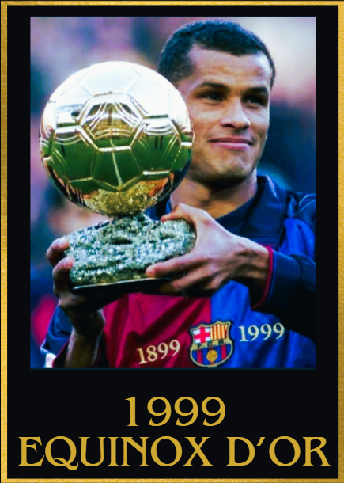

1990s Equinox d'Or Winners
1990
1st: Lothar Matthäus 🇩🇪 Inter Milan
2nd: Diego Maradona 🇦🇷 Napoli
3rd: Franco Baresi 🇮🇹 AC Milan
4th: Salvatore Schillaci 🇮🇹 Juventus
5th: Jürgen Klinsmann 🇩🇪 Inter Milan

Achievements
- 39 goal contributions as a CM/DM
- World cup Winner
- World cup team of the tournament
Key Moments
- 3 goal contributions vs Bologna and Pisa
- Brace vs Sampdoria and Yugoslavia
- 2 assists vs Napoli
- Crucial goal in the World cup quarter final vs Czech Republic
- 2 goal contributions vs Switzerland and Juventus
- Germany's best player in World Cup 1990 and made many crucial passes and tackles to help them win the tournament
1991
1st: Lothar Matthäus 🇩🇪 Inter Milan
2nd: Jean-Pierre Papin 🇫🇷 Olympique Marseille
3rd: Dejan Savićević 🇲🇪 Red Star Belgrade
4th: Gianluca Vialli 🇮🇹 Sampdoria/Juventus
5th: Gary Lineker 🏴 Tottenham Hotspur

Achievements
- 20 goal contributions as a holding midfielder
- UEFA Europa League winner
Key Moments
- A Goal vs Roma in the UEFA Europa league final
- 2 goal contributions vs Atalanta in UEFA Europa league quarter finals
- 1 goal vs Sporting CP in the UEFA Europa league semi final
- Crucial goal vs Juventus
- 2 goal contributions vs USSR
- Played a crucial role in protecting Inter Milan's defense and helped them keep 5/6 clean sheets in UEFA europa league knockouts
1992
1st: Marco Van Basten 🇳🇱 AC Milan
2nd: Hristo Stoichkov 🇧🇬 Barcelona
3rd: Ronald Koeman 🇳🇱 Barcelona
4th: Peter Schmeichel 🇩🇰 Manchester united
5th: Dennis Bergkamp 🇳🇱 Ajax

Achievements
- Serie A winner
- 52 goal contributions
- Serie A top scorer
- Euros semi finalist
- Supercoppa Italiana winner
Key Moments
- 3 goal contributions vs Fiorentina and Napoli
- Hat trick vs Cagliari, Foggia, Atalanta and Pescara
- 4 goal contributions vs Foggia
- 2 assists vs Torino in the coppa italia
- Pokers vs Napoli and IFK Goteborg
- Game winning goal vs Parma in the supercoppa italiana final
1993
1st: Franco Baresi 🇮🇹 AC Milan
2nd: Paolo Maldini 🇮🇹 AC Milan
3rd: Roberto Baggio 🇮🇹 Juventus
4th: Eric Cantona 🇫🇷 Manchester United
5th: Dennis Bergkamp 🇳🇱 Ajax

Achievements
- UEFA Champions league runner up
- Serie A winner
- 33 clean sheets across all comps
- 28 goals conceded across 53 games
Key Moments
- A clean sheet in every UEFA Champions league game he played in but the final vs Olympique Marseille
- 8 consecutive clean sheets in the league
- Great defensive masterclasses vs Big teams in both the League and the UEFA Champions league
1994
1st: Paolo Maldini 🇮🇹 AC Milan
2nd: Romario 🇧🇷 Barcelona
3rd: Hristo Stoichkov 🇧🇬 Barcelona
4th: Jürgen Klinsmann 🇩🇪 Monaco/Tottenham Hotspur
5th: Roberto Baggio 🇮🇹 Juventus

Achievements
- World cup runner up
- UEFA Champions League winner
- 34 goals conceded in 53 games
- 27 clean sheets
- Serie A winner
- Italian Super cup winner
- Crucial in helping AC Milan to break the record for least goals conceded in a season
Key Moments
- Clean sheet vs Barcelona in the UEFA Champions League final
- 9 consecutive clean sheets in the league
- Great world cup campaign on top of keeping a clean sheet in the World Cup final
- Defensive masterclasses in the World Cup, UEFA champions league and the Serie A
1995
1st: Jari Litmanen 🇫🇮 Ajax
2nd: Marc Overmars 🇳🇱 Ajax
3rd: Paolo Maldini 🇮🇹 AC Milan
4th: Patrick Kluivert 🇳🇱 Ajax
5th: Alan Shearer 🏴 Blackburn Rovers

Achievements
- 45 goal contributions as a CAM
- Dutch League winner (Unbeaten)
- UEFA Champions League winner
- UEFA Super cup winner
- Intercontinental cup winner
- Dutch super cup winner
Key Moments
Brace vs Bayern in the UEFA Champions League semi finals
Crucial assist vs PSV Eindhoven
Hat trick vs NEC Nijmegen
Hat trick and 1 assist vs Ferencváros
3 goal contributions vs Feyenoord and Utrecht
1996
1st: Alan Shearer 🏴 Blackburn Rovers/ Newcastle United
2nd: Matthias Sammer 🇩🇪 Borussia Dortmund
3rd: Eric Cantona 🇫🇷 Manchester United
4th: Jürgen Klinsmann 🇩🇪 Bayern München
5th: Ronaldo Nazario 🇧🇷 PSV Eindhoven/Barcelona

Achievements
- Premier league top scorer
- Euros top scorer
- Premier League player of the year
- 45 goal contributions
- Euros semi finalist
Key Moments
- Brace vs Netherlands in the euros, Leeds United and AFC wimbeldon
- Hat trick vs Bolton Wanderers, Tottenham Hotspur
- 1 goal and 2 assists vs Nottingham Forrest and Manchester United
- 2 goal and 1 assist vs Tottenham Hotspur
1997
1st: Ronaldo Nazario 🇧🇷 Barcelona/ Inter Milan
2nd: Roberto Carlos 🇧🇷 Real Madrid
3rd: Andreas Möller 🇩🇪 Borussia Dortmund
4th: Raul Gonzalez 🇪🇸 Real Madrid
5th: Zinedine Zidane 🇫🇷 Juventus

Achievements
- European golden shoe
- Copa America winner
- Confederations cup winner
- Copa del Rey winner
- 77 goal contributions
Key Moments
- 3 goal contributions vs Poland and Costa Rica
- 4 goal contributions vs Chile
- Hat trick vs Real Zaragoza, Atletico Madrid and Piacenza
- 3 goals and 1 assist vs Atletico Madrid
- Brace vs Las Palmas in the Copa del Rey final
- 3 goals and 2 assists vs Australia in the Confederations cup final
1998
1st: Zinedine Zidane 🇫🇷 Juventus
2nd: Ronaldo Nazario 🇧🇷 Inter Milan
3rd: Lillian Thuram 🇫🇷 Parma
4th: Rivaldo 🇧🇷 Barcelona
5th: Alessandro Del Piero 🇮🇹 Juventus

Achievements
- 27 goal contributions as an attacking midfielder
- UEFA champions league runner up
- Serie A winner
- World Cup winner
Key Moments
- Hat trick of assists vs Dinamo Kyiv
- 2 goal contributions vs AS Monaco in the UEFA Champions League semi final
- Brace vs Atalanta and Brazil (in the world cup final)
- Crucial goals vs Lazio and AS Roma
- 2 goal contributions vs Fiorentina in the Coppa Italia
- 2 assists vs Bologna
1999
1st: Rivaldo 🇧🇷 Barcelona
2nd: David Beckham 🏴 Manchester united
3rd: Dwight Yorke 🇹🇹 Manchester United
4th: Luis Figo 🇵🇹 Barcelona
5th: Christian Vieri 🇮🇹 Lazio/Inter Milan

Achievements
- La liga winner
- La Liga Player of the season
- Most UEFA champions league goals (1999 calendar year)
- 60 Goal contributions
- Copa America winner
- Copa America top scorer and player of the tournament
Key Moments
- 4 goal contributions vs Alaves
- 2 goals and 1 assist vs Real Zaragoza, Athletic Bilbao and Uruguay (in the Copa america final)
- Hat trick vs Real Oviedo
- 1 goal and 2 assists vs Villarreal
- Clutch goal in every Copa America knockout game
- A hat trick and an assist vs Argentina